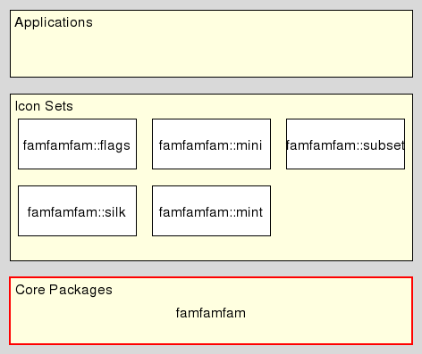

famfamfam - FamFamFam Core
Welcome to famfamfam, a set of packages providing access to the same-named icon sets created by Mark James, at http://www.famfamfam.com/lab/icons/
This package is internal to the other FamFamFam packages and provides the common functionality shared by all.
It resides in the Core level of the architecture 
This method adds/removes a callback invoked whenever an image is loaded. This means that the callback is only invoked the first time an image is requested and thus not in the in-memory cache yet. Any further requests served from the cache are not reported.
Setting an empty string as callback deactivates it.
The signature of the callback is
The arguments to the callback provide the name of the icon set, the name of the icon itself, and the path the icon was loaded from.
The result of the callback is ignored.
Any error thrown by the callback will prevent the icon from being loaded, i.e. the get method of the icon set will be aborted.
This method returns a list containing the names of all declared icon sets.
This method registers the icons found in the icon directory icondir and matching the pattern as the icon set name. If the pattern is not specified it defaults to *.png.
The command creates the accessor commands
::famfamfam name get
::famfamfam name list
::famfamfam name path
for the new icon set. These are aliases to the core methods below, with the name of the icon set preset.
The command returns the empty string as its result.
This command is an alias of famfamfam declare, available for compatibility with packages based on the 1.0 API.
This method returns a Tk image holding the icon in icon set iconset. An error will be thrown if either icon set or icon are not valid.
This method returns the path of the image file for the icon in icon set iconset. An error will be thrown if either icon set or icon are not valid.
This method returns a list containing the names of all valid icons in the icon set iconset. An error will be thrown if the iconset is not valid. If the pattern is specified then only names matching that pattern are returned. Matching is done by string match, i.e. the argument is a glob pattern.
This document, and the package it describes, will undoubtedly contain bugs and other problems. Please report such at the FamFamFam Tcl Tracker. Please also report any ideas for enhancements you may have for either package and/or documentation.
Icon sets
Copyright © 2012 Andreas Kupries <andreas_kupries@users.sourceforge.net>
Copyright © 2012 Documentation, Andreas Kupries